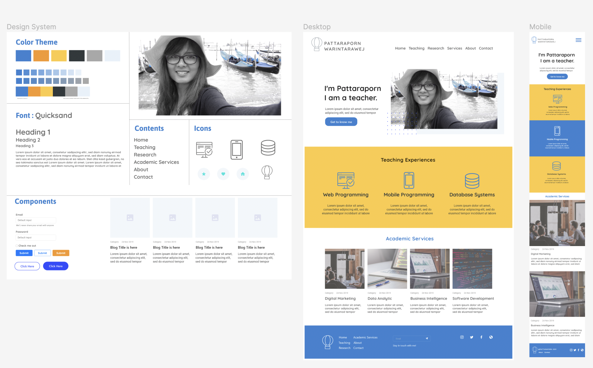

934-206 Web Programming
หลักการเขียนโปรแกรมเว็บ การพัฒนาโปรแกรมประยุกต์เว็บโดยใช้ภาษาที่นิยม
ภาษาสคริปต์ ภาษาสาหรับการจัดรูปแบบเว็บ การพัฒนาเว็บเพื่อใช้งานฐานข้อมูล
เฟรมเวอร์คสาหรับการพัฒนาเว็บ การฝึกปฏิบัติที่สอดคล้องกับรายวิชา
Principles of web programming; web application development using popular
languages; scripting languages, web formatting languages; web development
for using database; framework for web development; practice corresponding
with course
Course Learning Objectives
-
กำหนดโครงสร้างของเว็บเพจด้วยภาษา HTML และออกแบบเว็บด้วยภาษา CSS ได้
- สามารถประยุกต์ใช้ภาษาสคริปต์สำหรับประมวลผลฝั่งไคล์เอ็นท์ได้
- ประยุกต์ใช้เทคโนโลยีฝั่งเซิร์ฟเวอร์ติดต่อฐานข้อมูลได้
- พัฒนาระบบสารสนเทศบนเว็บตามโจทย์ความต้องการของธุรกิจ/สังคมได้
-
แสดงพฤติกรรรมไม่ละเมิดจรรยาบรรณวิชาชีพและช่วยเหลือเกื้อกูลการทำงานร่วมกันเป็นทีม
เกี่ยวกับผู้สอน
ดร.ภัทราพร วรินทรเวช
คณะวิทยาศาสตร์และเทคโนโลยีอุตสาหกรรม
มหาวิทยาลัยสงขลานครินทร์ วิทยาเขตสุราษฎร์ธานี
Email: pattaraporn.w@psu.ac.th
Office: SA202
Topics
- HTML
- CSS
- JavaScript
- PHP & MySQL
การประเมินผลการเรียน
- คะแนนแบบฝึกหัด และกิจกรรมในชั้นเรียน 50%
- คะแนนสอบปฏิบัติ 30%
- คะแนนโครงงานกลุ่ม 20%
ศึกษาด้วยตนเอง
หลักการออกแบบเว็บไซต์ ศึกษาด้วยตนเอง ที่นี่ PSU MOOC รายวิชา
การออกแบบเว็บเพจและสร้างระบบเว็บต้นแบบสมัยใหม่ ด้วย Adobe XD อ.ภัทราพร
วรินทรเวช
โครงงานวิชา 934-206 Web Programming
-
โครงงาน I: Web PortFolio (งานเดี่ยว) 10%
ออกแบบและพัฒนาเว็บสะสมผลงานวิชา Web Programming รวบรวมความรู้ ผลงานแบบฝึกหัด และโครงงานในรายวิชา

เกณฑ์การประเมินโโครงงาน I: Web PortFolio
-
ออกแบบเว็บเพจ การเลือกชุดสี เลือกตัวอักษร การจัดวางตำแหน่ง
ตามหลักการออกแบบ ด้วยโปรแกรม AdobeXD หรือ Figma ได้
-
เขียนชุดคำสั่ง HTML CSS Bootstrap สร้างเว็บเพจได้สวยงาม เช่น
การกำหนดเนื้อหาที่น่าสนใจ การกำหนดส่วนเมนู การใส่รูปภาพ
การแบ่งคอมลัมน์ การใส่ไอคอน การกำหนดความสวยงามของเพจ และการทำ
Responsive Design
- โครงงาน II: ระบบสารสนเทศบนเว็บทำงานร่วมกับฐานข้อมูล 20%
ใช้แนวคิด Design Thinking เลือกหัวข้อโครงงานในลักษณะ
ระบบสารสนเทศบนเว็บทำงานร่วมกับฐานข้อมูล เพื่อแก้ปัญหาใดปัญหาหนึ่ง
เกณฑ์การประเมินโครงงาน II: ระบบสารสนเทศบนเว็บทำงานร่วมกับฐานข้อมูล
-
บอกที่มาและความสำคัญของปัญหา โดยใช้ Design Thinking
และระบุขอบเขตของระบบ
-
ออกแบบเว็บเพจ การเลือกชุดสี เลือกตัวอักษร การจัดวางตำแหน่ง
ตามหลักการออกแบบ ด้วยโปรแกรม AdobeXD หรือ Figma ได้
-
เขียนชุดคำสั่ง HTML CSS Bootstrap สร้างเว็บเพจได้สวยงาม เช่น
การกำหนดเนื้อหาที่น่าสนใจ การกำหนดส่วนเมนู การใส่รูปภาพ
การแบ่งคอมลัมน์ การใส่ไอคอน การกำหนดความสวยงามของเพจ และการทำ
Responsive Design
-
เขียนชุดคำสั่ง PHP ทำงานร่วมกับฐานข้อมูล (เช่น แสดงข้อมูลจากฐานข้อมูล
(Select), ลงทะเบียน Register (บันทึกข้อมูลลง DB) หน้าแก้ไขข้อมูล
(แก้ไขข้อมูลลง DB)
Project:
- โครงงาน I: Web PortFolio
แบบฝึกหัด
- Ex1: วาดภาพอธิบาย สถาปัตยกรรมของเทคโนโลยี World Wide Web สรุปจากการดูวีดีโอ และนำเสนอหน้าชั้นเรียน
- Ex2: สร้างเว็บเพจเมนูอาหารที่ท่านชื่นชอบ
- Ex3: สร้่างเว็บเพจออกแบบฟอร์มลงทะเบียนศิษย์เก่า IT + IS
- Ex4: สร้างเว็บเพจเมนูอาหาร + CSS